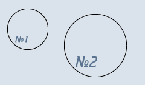

Главная | Оглавление | Словарь
Для создания круглой области нам нужны будут координаты ее центра (x и y) и длинна радиуса (R) в пикселях. Т.е. порядок записи следующий:
<area shape="circle" coords="x,y,R">Давайте будет опять работать с геометрической областью №1. В нашем случае координаты для маленького круга будут такие: x=46, y=48; а длинна радиуса - R=35. Запишем:
<area shape="circle" coords="46,48,35">
</map>
Теперь, когда самое главное записано, пропишем имя карты, куда она ссылается и привяжем карту к рисунку:
... Куча текста и всякого содержания, или ничего...
<map name="karta2">
<area href="drugoy_document_2.html" shape="circle" coords="46,48,35">
</map>
Кстати, для карты мы можем прописать ALT для каждой области, сейчас у нас только одна область, но все равно, пропишем для нее ALT:
... Куча текста и всякого содержания, или ничего...
<map name="karta2">
<area href="drugoy_document_2.html" shape="circle" coords="46,48,35" alt="маленький круг">
</map>
Теперь при наведении на область №1 будет всплывать подсказка, что же это такое :)
Давайте посмотрим результат (нажмите на первый круг):

Теперь вы самостоятельно сделаете ссылкой второй круг (x=158, y=75, R=53), чтобы закрепить пройденное.